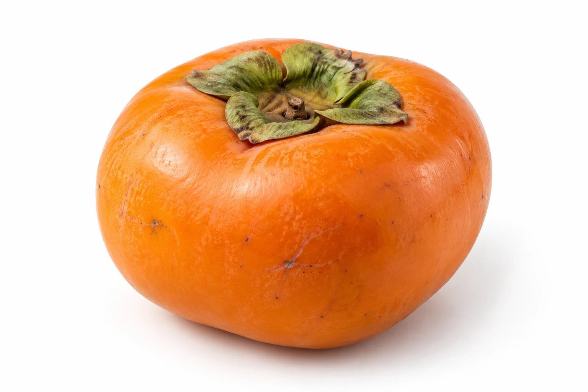
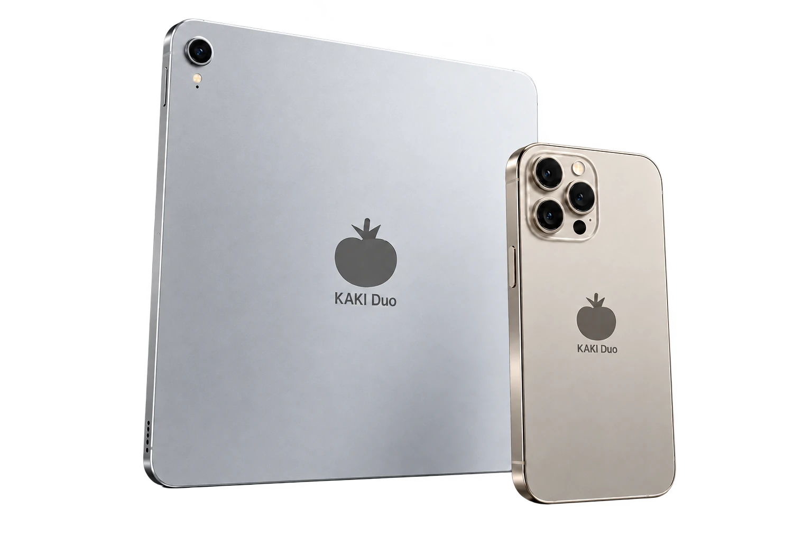
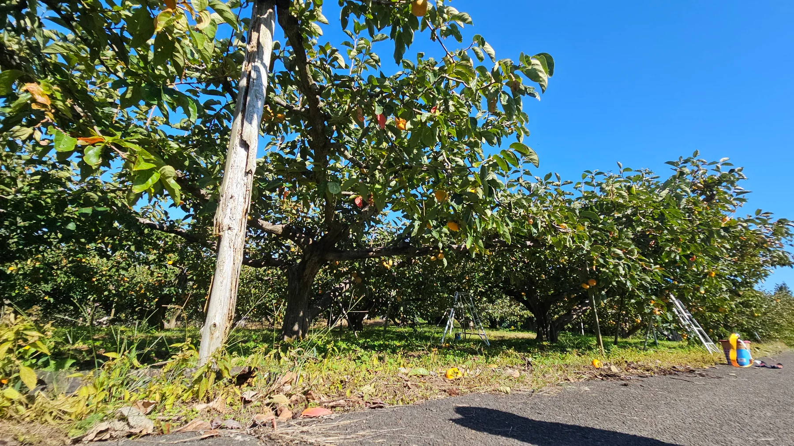
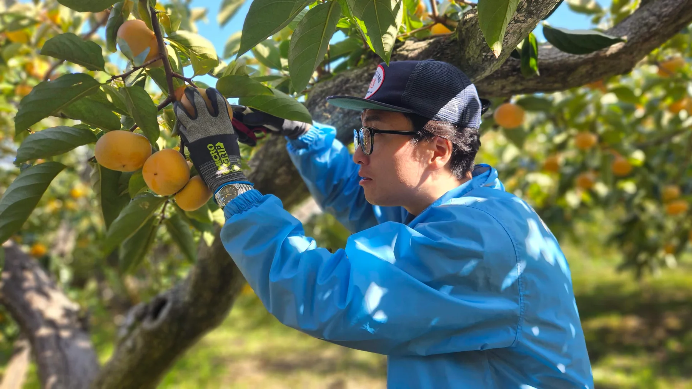
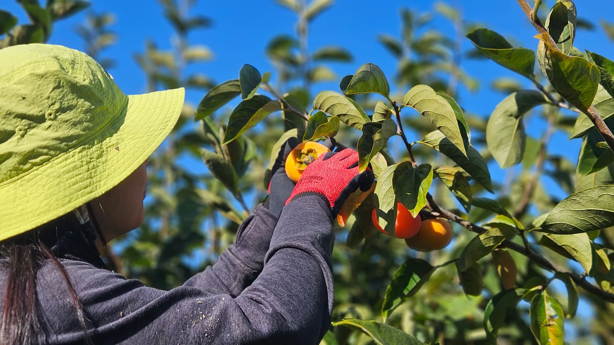
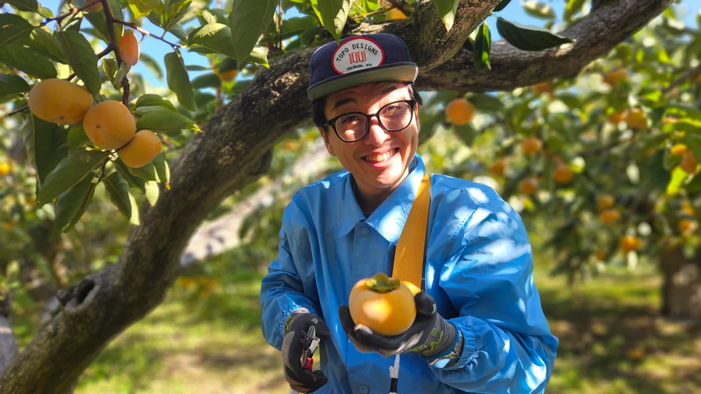
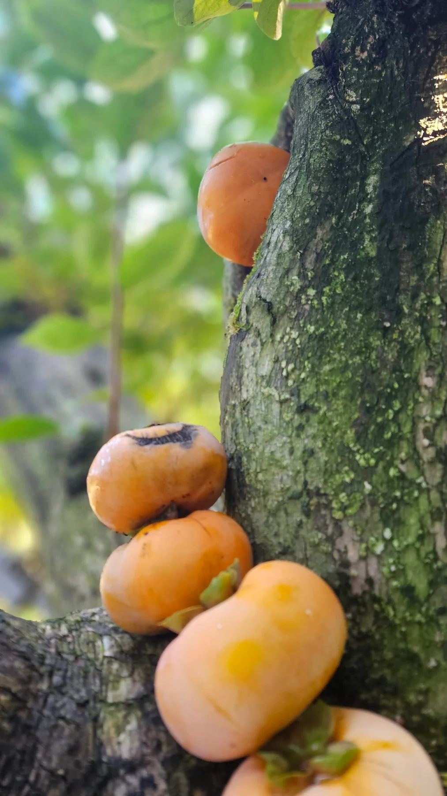
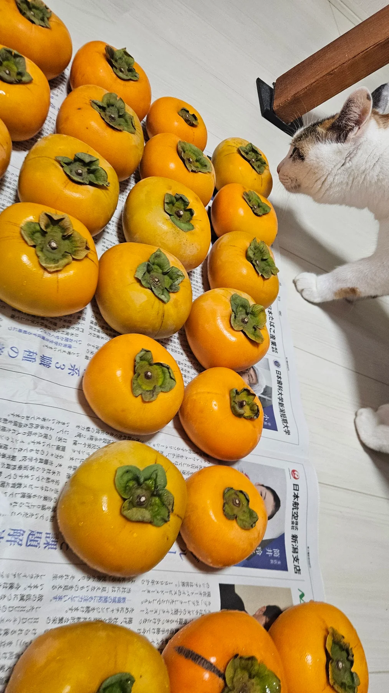
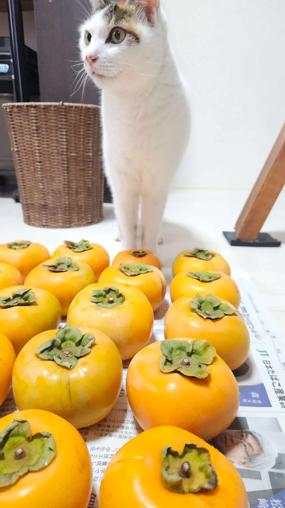

そのままの、個性。
ひらけば、秋の恵み。
スクロールして、ひらく
秋の贈りもの。2026年モデル。
ひとつとして、
同じものはない。
自然が育てた形と色。
ひとつひとつに、秋の表情。
必要なのは、
ほんの少しの食欲。
充電、不要。
手に取って、皮をむいて、味わうだけ。
旬の味わい、標準装備。
自然が育てた、
新潟の秋から。
角田山の麓で育った、おけさ柿。
かじるのは、柿だけ。

スクロールして、秋へ。

秋は、手仕事。
この実りには、風景がある。
ひとつずつ、
手から手へ。



新潟の秋を、
そのままに。
太陽を浴びて、ゆっくり育った。
ひとつひとつに、秋の恵み。

気になるのは、
人だけじゃない。
収穫のあとは、小さな見学者も。


KAKI Duo
秋の贈りもの。2026年モデル。
製品仕様
- 製品名
- KAKI Duo
- シリーズ
- 秋の贈りもの
- モデル
- 2026年モデル
- 品種
- おけさ柿（八珍柿）
- カラー
- オレンジ（自然な色の違いがあります）
- デザイン
- 自然形成
- サイズ
- 果実によって異なります
- 重量
- 果実によって異なります
- 外装
- 天然果皮
- ストレージ
- 果肉・果汁
- ディスプレイ
- 非搭載
- バッテリー
- 非搭載
- 充電
- 不要
- 接続性
- オフライン専用
- 対応環境
- 食卓
- 生産地
- 新潟県新潟市西蒲区・角田山の麓
- 販売価格
- 非売品
- 提供方法
- 限定贈答
- 製品寿命
- 生鮮食品のため保存状態による
お召し上がりの前に
衝撃に弱いため、丁寧にお取り扱いください。生鮮食品につき、保存状態や熟度にご注意ください。
そのままでは渋みがある場合があります。渋抜き済みであることを確認してからお召し上がりください。